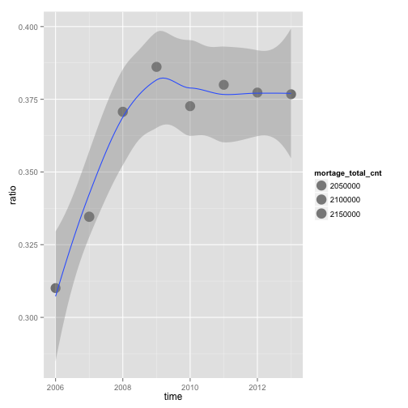

- 房價節節高升
- 大熊被抓了
- 房價真的太高了嗎?
ETL on R
Cheng Yu Lin (aha)
故事的起源
資料在哪裡
你想知道什麼資料?
- GDP
- 房貸餘額
- 股價
- 新聞
可能的來源?
- 政府公開資料
- 新聞
- 股市
即便知道資料在哪，可是資料還是如同
一盤散沙
ETL
- Extraction
- Transformation
- Loading
學習，實作，觀察
讀入資料 - read.table
至少要記得的 read.table
DF = read.table(file='檔案路徑',sep=",",stringsAsFactors=F,header=T)
- 輸出形態為
Data Frame - file 就是指讀入的檔案路徑
- sep 指的是欄位分割用的符號,通常csv檔案格式是透過
,做分割 - stringsAsFactors 預設是
True, 會讓讀入的字串都用Factor形態儲存，那麼資料就會轉為整數儲存與額外的對照表 - header 預設是
False，表示第一行是不是表格標頭，作為輸出的dataframe欄位名的colnames
等等 先安裝幾個建議的套件
dplyr可用類似SQL語法操作data fromexts處理時間格式好用的套件gdata可以處理Excel 2007以上的文件
等等 先安裝幾個建議的套件
dplyr可用類似SQL語法操作data fromexts處理時間格式好用的套件gdata可以處理Excel 2007以上的文件
install.packages("dplyr")
install.packages("xts")
install.packages("gdata")
好! 開始動手做吧!
好! 開始動手做吧!
資料勒？！
開始收集資料(房貸餘額)
開始收集資料
房貸餘額,直接下載現成的csv檔案
將資料讀入
library(dplyr)
Cl_info = read.table(file='./cl_info_other.csv',header=T,sep=",",stringsAsFactors=F)
Cl_info = mutate(Cl_info,data_dt = as.POSIXct(data_dt),
bank_code = as.factor(bank_code),etl_dt = as.POSIXct(etl_dt))
View(Cl_info)
- 到這裡已經完成第一次的資料
Extraction與Transformation了！
看見資料了!但是剛剛處理過程中的
mutate是什麼?
看見資料了!但是剛剛處理過程中的
mutate是什麼?
在
R中用來做資料清理與資料處理好用的套件dplyr其中之一的函式
dplyr 介紹 - select
select 函式，用來挑選欄位
Cl_info_part = select(Cl_info,date_dt,bank_nm,mortgage_bal)
- 輸出data frame
- 第一個參數為輸入的data frame
- 後續參數為選取的欄位名稱
給熟悉SQL的使用者
select data_dt,bank_nm,mortgage_bal from Cl_info;
dplyr 介紹 - filter
filter 函式，用來保留要留下的資料列
Cl_info_part2 = filter(Cl_info,mortgage_bal>1000000)
- 輸出data frame
- 第一個參數為輸入的data frame
- 第二個參數為邏輯運算式，可用data frame裡的欄位，當結果為
True時，該筆資料列保留
給熟悉SQL的使用者
select * from Cl_info where mortgage>1000000;
dplyr 介紹 - mutate
mutate 用來增加非彙總計算欄位
Cl_info_part3 = filter(Cl_info,mortage = mortgage/1000000)
- 輸出data frame
- 第一個參數為輸入的 data frame
- 第二參數為計算式，也可以用來當做轉換資料形態，變更欄位為名稱使用
給熟悉SQL的使用者
select mmortgage/1000000 as mortage from Cl_info;
dplyr 介紹 - arrange
arrange 用來重新排序
Cl_info_part4 = arrange(Cl_info,mortage,desc(data_dt))
- 輸出data frame
- 第一個參數為輸入的 data frame
- 後續參數為排序用欄位，預設遞增，可以透過
desc()變成遞減排序
給熟悉SQL的使用者
select * from Cl_info order by mortage,data_dt desc ;
下一個?
下一個?
別急，讓我們來練習抓下一個檔案，用剛剛講的指令讀入
開始收集資料(GDP)
開始收集資料(GDP)
- GDP從直接下載
國民生產毛額之處分 - 季(1980之後）
- 選全部的日期
- 選全部的計價方式
- 項目選GDP
- 總類選原始值
- 按繼續後，選從螢幕顯示Excel檔
- 開啟後，另存新檔成csv檔
- 開回
RStudio開始處理資料
練習讀入與創建一個data frame
GDP
答案
GDP = read.table(file='檔案位置',sep=",",stringsAsFactors=F,header=F)
答案
GDP = read.table(file='檔案位置',sep=",",stringsAsFactors=F,header=F)
輸入
View(GDP)觀察GDP會發現怎麼前後有很多列的資料是不要的

好亂，我想整理好這個data frome
資料清理
要處理的標的物有
- 去除前後
不相干的資料列 - 轉換欄位的格式
- 將單位轉換，從
百萬元變成元 - 將不應該出現的
,去除
- 將單位轉換，從
- 抽離
年份與季

一步一步來(1/3)
去除前後不相干的資料列
GDP_part1 = cbind(GDP,y=1:154)
GDP_part2 = filter(GDP_part1,y>4&y<137)
別忘了改上欄位名稱
colnames(GDP_part2) = c("time","GDP","GDP_yoy","GDP_2006","GDP_2006_yoy",
"GDP_minus","GDP_minus_yoy","row_no")
- 利用
cbind，作columns合併 - 利用
colnames，改變欄位名稱
一步一步來(2/3)
轉移文字格式
#去除中間不合理的,在數字欄位上與補上百萬
GDP_part3= mutate(GDP_part2,GDP = as.numeric(gsub(",", "",GDP))*1000000)
- 我們利用了
gsub, 替換字元，將原先有問題的,去除 - 而後利用了
as.numeric將原來的文字形態改成數字
一步一步來(3/3)
抽離年份與季
GDP_part4 = mutate(GDP_part3,year=as.numeric(substr(time,0,4)),
season=as.numeric(substr(time,6,6)))
GDP_part5 = select(GDP_part4,year,season,GDP)
- 我們利用了
substr, 取出特定位置的資料 - 再次利用
as.numeric, 將文字轉成數字
擁有了
GDP和房貸餘額，那接下來我們該怎麼處理變成後續可以使用的資料呢？
資料整併
要處理的標的物有
- 將房貸餘額匯總到
每個月的資料 - 將GDP匯總到
每年的資料 - 透過
年份將房貸餘額與GDP的表結合起來
dplyr 介紹 - group_by, summarise
group_by 用來將資料包裝成一組，做後續的彙總
summarise則用來做後續的各類彙總操作
Cl_info_part6 = group_by(Cl_info_part5,data_dt) #先匯總
Cl_info_part7 = summarise(Cl_info_part6,
mortage_total_bal = sum(mortgage_bal, na.rm = TRUE))
GDP_part6 = summarise(group_by(GDP_part5,year),GDP=sum(GDP))
- 輸出data frame
- 第一個參數為輸入的 data frame
- 第二個欄位之後都是用來group by/summarise 的欄位
- 後續參數用來處理匯總運算
給熟悉SQL的使用者
select sum(mortgage_bal) as mortage_total_bal from Cl_info group by time ;
group by 可加先下也可不下，不下的情況是直對接
全部資料做集匯總運算
彙總函數 summarise
可以使用的函數如下所列
- mean 平均值
- sum 加總
- n 計算個數 例如: A B B C 輸出
4 - n_distinct 計算不同物件的個數 例: A B B C 輸出
3 - first 該群體第一個，可配合
order_by使用; first(x,order_by(y)) - last 該群體最後一個，可配合
order_by使用; last(x,order_by(y)) - nth 該群體的第n個，可配合
order_by使用; nth(x,10,order_by(y)) - max, min 最大或最小值
- median 中位數
- IQR 就是IQR ＃待驗證
//TODO 練習題目
接下來比較難，真的!!!!
結合表格
- cbind 用來做
1-1水平結合 - rbind 用來做 垂直結合
- left_join 用來做
多對多水平結合 - inner_join 用來做
多對多水平結合 - anti_join 用來做
多對多水平結合 - semi_join 用來做
多對多水平結合
前兩個很簡單,後面四個是如同SQL的join處理
left_join(x,y,by=NULL,copy=FALSE)
對應
select x.* from x full join y ;
join講解前資料準備
接下來先從各類join開始說明
先建立資料集
x=data.frame(c1 = c(1,1,2,3,4,5,5),
c2 = c('A','B','C','D','E','F','G'))
y=data.frame(c1 = c(1,2,2,3,4,6,6),
c2 = c('A','B','C','D','E','F','G'))
join講解前資料準備
接下來先從各類join開始說明
先建立資料集
x=data.frame(c1 = c(1,1,2,3,4,5,5),
c2 = c('A','B','C','D','E','F','G'))
y=data.frame(c1 = c(1,2,2,3,4,6,6),
c2 = c('A','B','C','D','E','F','G'))
打入 View(x)與View(y)應該會看見

dplyr 介紹 - left_join
參數by 指出以何欄位作為對照鍵值
透過先前創建的x與y，以及交集的鍵值c1
ljxy = left_join(x,y,by="c1") #以X為主
ljyx = left_join(y,x,by="c1") #以Y為主

dplyr 介紹 - inner_join, anti_join
inner_join 取出共有的鍵值
inner_join(x,y,by="c1")
## c1 c2.x c2.y
## 1 1 A A
## 2 1 B A
## 3 2 C B
## 4 2 C C
## 5 3 D D
## 6 4 E E
anti_join 取出非共有的鍵值
anti_join(x,y,by="c1")
## c1 c2
## 1 5 F
## 2 5 G
anti_join(y,x,by="c1")
## c1 c2
## 1 6 F
## 2 6 G
dplyr 介紹 - semi_join
與left_join的差別在，只要對應不到的鍵值就不出現
semi_join 取出共有的鍵值,只留x 的欄位
semi_join(x,y,by="c1")
## c1 c2
## 1 1 A
## 2 1 B
## 3 2 C
## 4 3 D
## 5 4 E
semi_join 取出共有的鍵值,只留y的欄位
semi_join(y,x,by="c1")
## c1 c2
## 1 1 A
## 2 2 B
## 3 2 C
## 4 3 D
## 5 4 E
實際問題 - 練習題
請問，這兩張表該怎麼結合比較好?

請問，這兩張表該怎麼結合比較好?用誰當第一參數?
- left_join Cl_Info_part7
- semi_join Cl_Info_part7
- left_join GDP_part5
- semi_join GDP_part5
- 其他
因為GDP_part5_所俱有的時間點較少，用這個當作主鍵是比較好的.
資料整理完成!
GDP_part7 = select(mutate(GDP_part6 ,
time = as.POSIXct(paste(year,'1','1',sep='-'))),time,GDP)
t1 = left_join(GDP_part7,Cl_info_part7,by="time")
t2 = filter(t1,is.na(mortage_total_bal)==FALSE)
看一下資料 View(t2)

接下來我們應該做 - 畫圖
畫圖
library(ggplot2)
ggplot(see1, aes(time, ratio)) +
geom_point(aes(size = mortage_total_cnt), alpha = 1/2) +
geom_smooth(method="loess") +
scale_size_area()

接下來我們應該做 - 解釋
- 畫圖
解釋
- 09達到高峰，但之後房貸與GDP的比值平穩維持在37.5%
- GDP成長比率與房貸餘額幾乎成正比
- 從新聞顯示
- 09年遺產稅調降, 許多人回來
投資?炒房? - 10年開始打房政策
- 如果加上
房價所得比，還可以說什麼呢?
- 09年遺產稅調降, 許多人回來
接下來我們應該做 - 報告
- 畫圖
- 解釋
報告
Review
我們做了什麼?
- 設定問題
- 下載與讀入與整理房貸資料
- 下載與讀入與整理GDP
- 整合資料
- 畫圖
Excerises
資料處理練習
- 下載M1b M2 資料
- 整合之前的資料
- 比較房貸餘額與M1b的變化
函式運用練習
- 找2014.02房貸放款
數量最少的銀行 - 將GDP改用
億新台幣呈現
Speical
Topics
- 自動化排程
- 與資料庫溝通
- 其他的資料源